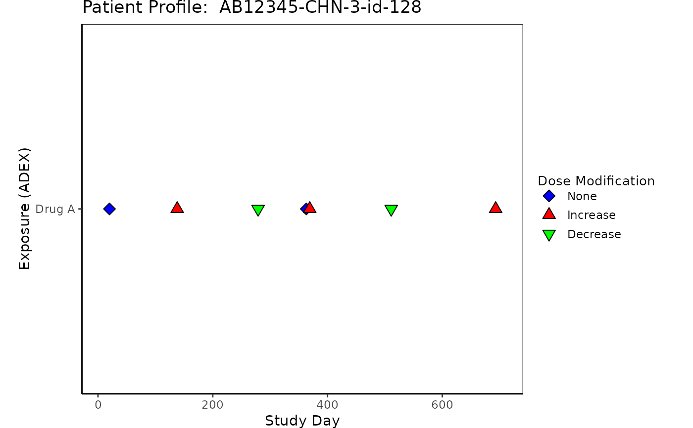
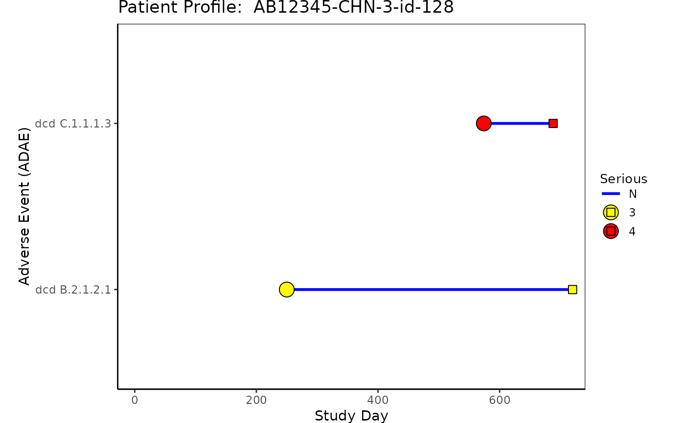
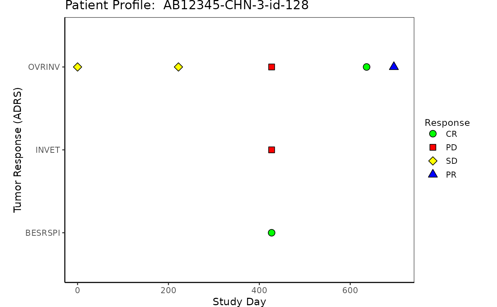
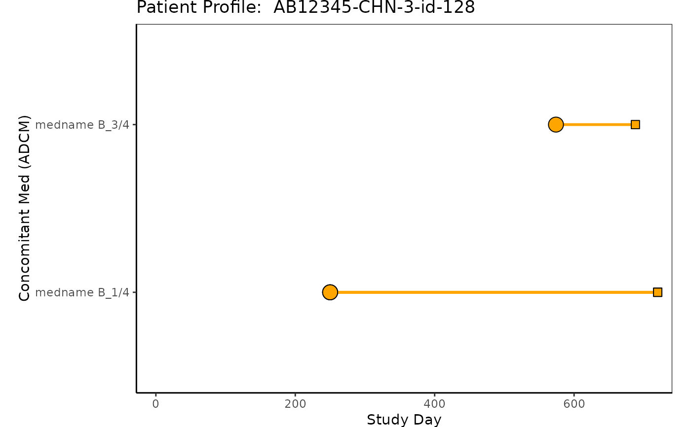
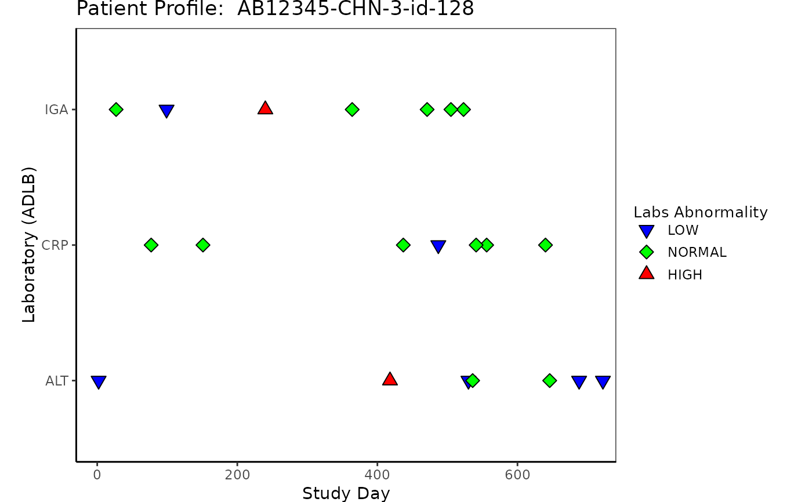

Patient domain profile provides information for a specific subject that participated in the study.
The plot includes relevant data for one subject in a user specified domain, including
adverse events (ADAE), response (ADRS), concomitant medications
(ADCM), exposure (ADEX), and laboratory (ADLB).
patient_domain_profile(
domain = NULL,
var_names,
marker_pos,
arrow_end,
xtick_at = waiver(),
line_col_list = NULL,
line_width = 1,
arrow_size = 0.1,
no_enddate_extention = 0,
marker_col_list = NULL,
marker_shape_list = NULL,
show_days_label = TRUE,
xlim = c(-28, max(marker_pos) + 5),
xlab = NULL,
show_title = TRUE,
title = NULL
)string of domain name to be shown as y-axis label, default is NULL
(no y-axis label shown)
character vector to identify each lane
Depending on the domain, this can be
marker position numeric vector for domains ADEX, ADLB, and ADRS
numeric data frame with two columns, start and end time marker position,
for domains ADAE and ADCM
numeric value indicates the end of arrow when arrows are requested
numeric vector with the locations of the x-axis tick marks
a list may contain
line_col: factor vector to specify color for segments , default is NULL
(no line color is specified)
line_col_opt aesthetic values to map color values (named vector to map color values to each name).
If not NULL, please make sure this contains all possible values for line_col values,
otherwise color will be assigned by hcl.colors
line_col_legend: a string to be displayed as line color legend title when line_col is specified,
default is NULL (no legend title is displayed)
numeric value for segment width, default is line_width = 1
numeric value for arrow size, default is arrow_size = 0.1
numeric value for extending the arrow when end date is missing for ADAE
or ADCM domain. Default is no_enddate_extention = 0.
a list may contain
marker_col a factor vector to specify color for markers,
default is NULL (no color markers is specified)
marker_col_opt aesthetic values to map color values (named vector to map color values to each name)
If not NULL, please make sure this contains all possible values for marker_col values,
otherwise color will be assigned by hcl.colors
marker_col_legend a string to be displayed as marker color legend title, default is NULL
(no legend title is displayed)
a list may contain
marker_shape factor vector to specify shape for markers,
default is NULL (no shape marker is specified)
marker_shape_opt aesthetic values to map shape values (named vector to map shape values to each name).
If not NULL, please make sure this contains all possible values for marker_shape values,
otherwise shape will be assigned by ggplot default
marker_shape_legend string to be displayed as marker shape legend title, default is NULL
(no legend title is displayed)
boolean value for showing y-axis label, default is TRUE
numeric vector for x-axis limit, default is
xlim = c(-28, max(marker_pos) + 5)
string to be shown as x-axis label, default is "Study Day"
boolean value for showing title of the plot, default is TRUE
string to be shown as title of the plot, default is NULL (no plot title is displayed)
plot object
library(scda)
library(tern)
library(dplyr)
# ADSL
rADSL <- synthetic_cdisc_data("latest")$adsl
ADSL <- rADSL %>%
group_by(USUBJID) %>%
mutate(
TRTSDT = as.Date(TRTSDTM),
max_date = max(as.Date(LSTALVDT), as.Date(DTHDT), na.rm = TRUE),
max_day = as.numeric(as.Date(max_date) - as.Date(TRTSDT)) + 1
) %>%
select(USUBJID, STUDYID, TRTSDT, max_day) %>%
filter(USUBJID == rADSL$USUBJID[1])
#> Warning: no non-missing arguments to max; returning -Inf
#> Warning: no non-missing arguments to max; returning -Inf
#> Warning: no non-missing arguments to max; returning -Inf
#> Warning: no non-missing arguments to max; returning -Inf
#> Warning: no non-missing arguments to max; returning -Inf
#> Warning: no non-missing arguments to max; returning -Inf
#> Warning: no non-missing arguments to max; returning -Inf
#> Warning: no non-missing arguments to max; returning -Inf
#> Warning: no non-missing arguments to max; returning -Inf
#> Warning: no non-missing arguments to max; returning -Inf
#> Warning: no non-missing arguments to max; returning -Inf
#> Warning: no non-missing arguments to max; returning -Inf
#> Warning: no non-missing arguments to max; returning -Inf
#> Warning: no non-missing arguments to max; returning -Inf
#> Warning: no non-missing arguments to max; returning -Inf
#> Warning: no non-missing arguments to max; returning -Inf
#> Warning: no non-missing arguments to max; returning -Inf
#> Warning: no non-missing arguments to max; returning -Inf
#> Warning: no non-missing arguments to max; returning -Inf
#> Warning: no non-missing arguments to max; returning -Inf
#> Warning: no non-missing arguments to max; returning -Inf
#> Warning: no non-missing arguments to max; returning -Inf
#> Warning: no non-missing arguments to max; returning -Inf
#> Warning: no non-missing arguments to max; returning -Inf
#> Warning: no non-missing arguments to max; returning -Inf
#> Warning: no non-missing arguments to max; returning -Inf
#> Warning: no non-missing arguments to max; returning -Inf
#> Warning: no non-missing arguments to max; returning -Inf
#> Warning: no non-missing arguments to max; returning -Inf
#> Warning: no non-missing arguments to max; returning -Inf
#> Warning: no non-missing arguments to max; returning -Inf
#> Warning: no non-missing arguments to max; returning -Inf
#> Warning: no non-missing arguments to max; returning -Inf
#> Warning: no non-missing arguments to max; returning -Inf
#> Warning: no non-missing arguments to max; returning -Inf
#> Warning: no non-missing arguments to max; returning -Inf
#> Warning: no non-missing arguments to max; returning -Inf
#> Warning: no non-missing arguments to max; returning -Inf
#> Warning: no non-missing arguments to max; returning -Inf
#> Warning: no non-missing arguments to max; returning -Inf
#> Warning: no non-missing arguments to max; returning -Inf
#> Warning: no non-missing arguments to max; returning -Inf
#> Warning: no non-missing arguments to max; returning -Inf
#> Warning: no non-missing arguments to max; returning -Inf
#> Warning: no non-missing arguments to max; returning -Inf
#> Warning: no non-missing arguments to max; returning -Inf
#> Warning: no non-missing arguments to max; returning -Inf
#> Warning: no non-missing arguments to max; returning -Inf
#> Warning: no non-missing arguments to max; returning -Inf
#> Warning: no non-missing arguments to max; returning -Inf
#> Warning: no non-missing arguments to max; returning -Inf
#> Warning: no non-missing arguments to max; returning -Inf
#> Warning: no non-missing arguments to max; returning -Inf
#> Warning: no non-missing arguments to max; returning -Inf
#> Warning: no non-missing arguments to max; returning -Inf
#> Warning: no non-missing arguments to max; returning -Inf
#> Warning: no non-missing arguments to max; returning -Inf
#> Warning: no non-missing arguments to max; returning -Inf
#> Warning: no non-missing arguments to max; returning -Inf
#> Warning: no non-missing arguments to max; returning -Inf
#> Warning: no non-missing arguments to max; returning -Inf
#> Warning: no non-missing arguments to max; returning -Inf
#> Warning: no non-missing arguments to max; returning -Inf
#> Warning: no non-missing arguments to max; returning -Inf
#> Warning: no non-missing arguments to max; returning -Inf
#> Warning: no non-missing arguments to max; returning -Inf
#> Warning: no non-missing arguments to max; returning -Inf
#> Warning: no non-missing arguments to max; returning -Inf
#> Warning: no non-missing arguments to max; returning -Inf
#> Warning: no non-missing arguments to max; returning -Inf
# Example 1 Exposure "ADEX"
rADEX <- synthetic_cdisc_data("latest")$adex
ADEX <- rADEX %>%
select(USUBJID, STUDYID, ASTDTM, PARCAT2, AVAL, AVALU, PARAMCD)
ADEX <- left_join(ADSL, ADEX, by = c("USUBJID", "STUDYID"))
ADEX <- ADEX %>%
filter(PARAMCD == "DOSE") %>%
arrange(PARCAT2, PARAMCD) %>%
mutate(diff = c(0, diff(AVAL, lag = 1))) %>%
mutate(
Modification = case_when(
diff < 0 ~ "Decrease",
diff > 0 ~ "Increase",
diff == 0 ~ "None"
)
) %>%
mutate(
ASTDT_dur = as.numeric(
as.Date(
substr(as.character(ASTDTM), 1, 10)
) - as.Date(TRTSDT) + 1
)
)
p1 <- patient_domain_profile(
domain = "Exposure (ADEX)",
var_names = ADEX$PARCAT2,
marker_pos = ADEX$ASTDT_dur,
arrow_end = ADSL$max_day,
xtick_at = waiver(),
line_col_list = NULL,
line_width = 1,
arrow_size = 0.1,
no_enddate_extention = 0,
marker_col_list = list(
marker_col = factor(ADEX$Modification),
marker_col_opt = c("Increase" = "red", "Decrease" = "green", "None" = "blue"),
marker_col_legend = NULL
),
marker_shape_list = list(
marker_shape = factor(ADEX$Modification),
marker_shape_opt = c("Increase" = 24, "Decrease" = 25, "None" = 23),
marker_shape_legend = "Dose Modification"
),
show_days_label = TRUE,
xlim = c(-28, ADSL$max_day),
xlab = "Study Day",
title = paste("Patient Profile: ", ADSL$USUBJID)
)
p1

# Example 2 Adverse Event "ADAE"
# Note that ASTDY is represented by a circle and AENDY is represented by a square.
# If AENDY and ASTDY occur on the same day only AENDY will be shown.
# Adverse Event ADAE
rADAE <- synthetic_cdisc_data("latest")$adae
ADAE <- rADAE %>%
select(USUBJID, STUDYID, AESOC, AEDECOD, AESER, AETOXGR, AEREL, ASTDY, AENDY)
ADAE <- left_join(ADSL, ADAE, by = c("USUBJID", "STUDYID"))
p2 <- patient_domain_profile(
domain = "Adverse Event (ADAE)",
var_names = ADAE$AEDECOD,
marker_pos = ADAE[, c("ASTDY", "AENDY")],
arrow_end = ADSL$max_day,
xtick_at = waiver(),
line_col_list = list(
line_col = ADAE$AESER,
line_col_legend = "Serious",
line_col_opt = c("blue", "green")
),
line_width = 1,
arrow_size = 0.1,
no_enddate_extention = 0,
marker_col_list = list(
marker_col = factor(ADAE$AETOXGR),
marker_col_opt = c("3" = "yellow", "4" = "red"),
marker_col_legend = NULL
),
marker_shape_list = list(
marker_shape = NULL,
marker_shape_opt = NULL,
marker_shape_legend = "Grade"
),
show_days_label = TRUE,
xlim = c(-28, ADSL$max_day),
xlab = "Study Day",
title = paste("Patient Profile: ", ADSL$USUBJID)
)
#> Warning: `guides(<scale> = FALSE)` is deprecated. Please use `guides(<scale> = "none")` instead.
p2

# Example 3 Tumor Response "ADRS"
rADRS <- synthetic_cdisc_data("latest")$adrs
ADRS <- rADRS %>%
select(USUBJID, STUDYID, PARAMCD, PARAM, AVALC, AVAL, ADY, ADTM)
ADRS <- left_join(ADSL, ADRS, by = c("USUBJID", "STUDYID"))
p3 <- patient_domain_profile(
domain = "Tumor Response (ADRS)",
var_names = ADRS$PARAMCD,
marker_pos = ADRS$ADY,
arrow_end = ADSL$max_day,
xtick_at = waiver(),
line_col_list = NULL,
line_width = 1,
arrow_size = 0.1,
no_enddate_extention = 0,
marker_col_list = list(
marker_col = factor(ADRS$AVALC),
marker_col_opt = c(
"CR" = "green", "PR" = "blue",
"SD" = "yellow", "PD" = "red", "NE" = "pink",
"Y" = "lightblue", "N" = "darkred"
),
marker_col_legend = NULL
),
marker_shape_list = list(
marker_shape = factor(ADRS$AVALC),
marker_shape_opt = c(
"CR" = 21, "PR" = 24,
"SD" = 23, "PD" = 22, "NE" = 14,
"Y" = 11, "N" = 8
),
marker_shape_legend = "Response"
),
show_days_label = TRUE,
xlim = c(-28, ADSL$max_day),
xlab = "Study Day",
title = paste("Patient Profile: ", ADSL$USUBJID)
)
p3

# Example 4 Concomitant Med "ADCM"
rADCM <- synthetic_cdisc_data("latest")$adcm
ADCM <- rADCM %>%
select(USUBJID, STUDYID, ASTDTM, AENDTM, CMDECOD, ASTDY, AENDY)
ADCM <- left_join(ADSL, ADCM, by = c("USUBJID", "STUDYID"))
p4 <- patient_domain_profile(
domain = "Concomitant Med (ADCM)",
var_names = ADCM$CMDECOD,
marker_pos = ADCM[, c("ASTDY", "AENDY")],
arrow_end = ADSL$max_day,
xtick_at = waiver(),
line_col_list = list(line_col_opt = "orange"),
line_width = 1,
arrow_size = 0.1,
no_enddate_extention = 50,
marker_col_list = list(marker_col_opt = "orange"),
marker_shape_list = NULL,
show_days_label = TRUE,
xlim = c(-28, ADSL$max_day),
xlab = "Study Day",
title = paste("Patient Profile: ", ADSL$USUBJID)
)
#> Warning: `guides(<scale> = FALSE)` is deprecated. Please use `guides(<scale> = "none")` instead.
#> Warning: `guides(<scale> = FALSE)` is deprecated. Please use `guides(<scale> = "none")` instead.
#> Warning: `guides(<scale> = FALSE)` is deprecated. Please use `guides(<scale> = "none")` instead.
p4

# Example 5 Laboratory "ADLB"
rADLB <- synthetic_cdisc_data("latest")$adlb
ADLB <- rADLB %>%
select(
USUBJID, STUDYID, LBSEQ, PARAMCD, BASETYPE,
ADTM, ADY, ATPTN, AVISITN, LBTESTCD, ANRIND
)
ADLB <- left_join(ADSL, ADLB, by = c("USUBJID", "STUDYID"))
ADLB <- ADLB %>%
group_by(USUBJID) %>%
mutate(ANRIND = factor(ANRIND, levels = c("LOW", "NORMAL", "HIGH")))
p5 <- patient_domain_profile(
domain = "Laboratory (ADLB)",
var_names = ADLB$LBTESTCD,
marker_pos = ADLB$ADY,
arrow_end = ADSL$max_day,
xtick_at = waiver(),
line_col_list = NULL,
line_width = 1,
arrow_size = 0.1,
no_enddate_extention = 0,
marker_col_list = list(
marker_col = factor(ADLB$ANRIND),
marker_col_opt = c(
"HIGH" = "red", "LOW" = "blue",
"NORMAL" = "green", "NA" = "green"
)
),
marker_shape_list = list(
marker_shape = factor(ADLB$ANRIND),
marker_shape_opt = c(
"HIGH" = 24, "LOW" = 25,
"NORMAL" = 23, "NA" = 23
),
marker_shape_legend = "Labs Abnormality"
),
show_days_label = TRUE,
xlim = c(-30, ADSL$max_day),
xlab = "Study Day",
title = paste("Patient Profile: ", ADSL$USUBJID)
)
p5
